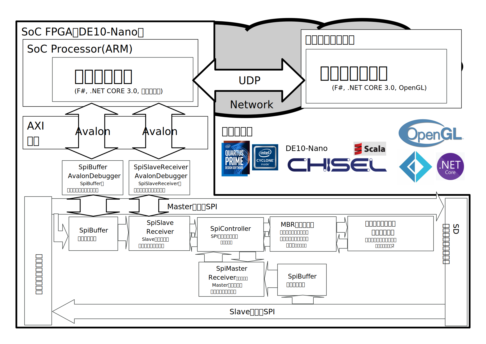
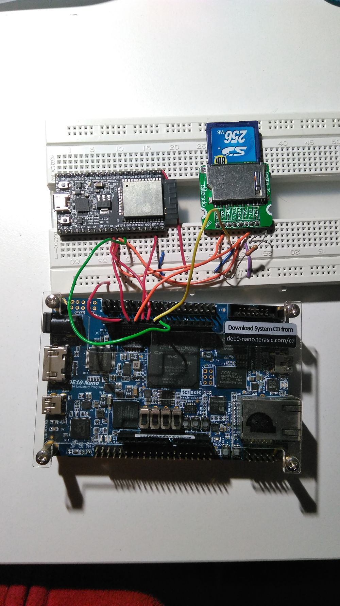

2020-02-02 fpgasocfpgaquartuschiselscalasechack365  Components(from development figure)  DE10Nano with ESP32 with SD card Related Links SecHack365 2019 第7章 レポート 優秀修了生からのメッセージ | SecHack365 2019 作品一覧 | SecHack365 Arduino UNO 3Dモデル CC-BY - ビボーログ https://sites.google.com/site/bknobiboroku/blender/arduino_uno_board KAMPPHER Inspectorの記事 KAMPPHER Noticeの記事